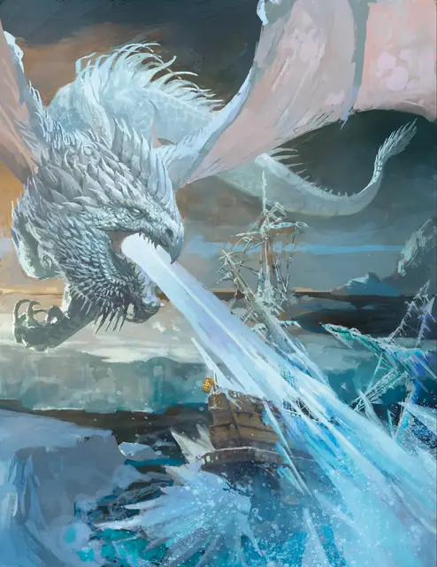

Древний белый дракон
Ancient White Dragon
Громадный Дракон (Цветной), Хаотичный Злой

Класс Защиты 20 Инициатива +12 (22)
Хиты 333 (18к20 + 144)
Скорость 40 футов, Плавания 40 футов, Полёта 80 футов, Копания 40 футов
| мод | спас | ||
|---|---|---|---|
| СИЛ | 26 | +8 | +8 |
| ЛОВ | 10 | +0 | +6 |
| ТЕЛ | 26 | +8 | +8 |
| мод | спас | ||
|---|---|---|---|
| ИНТ | 10 | +0 | +0 |
| МДР | 13 | +1 | +7 |
| ХАР | 18 | +4 | +4 |
Иммунитеты Холод
Чувства Тёмное зрение 120 футов, пассивное Восприятие 23, Слепое зрение 60 футов
Языки Общий, Драконий
Опасность 20 (25 000 опыта или 33 000 опыта в Логове; БВ +6)
Особенности
Хождение по льду. Дракон может перемещаться по ледяным поверхностям и лазать по ним, не совершая проверки характеристики. Кроме того, Труднопроходимая местность, состоящая из льда или снега, не стоит ему дополнительных футов.
Легендарное сопротивление (4/день, или 5/день в Логове). Если дракон проваливает спасбросок, он вместо этого может в нём преуспеть.
Действия
Мультиатака. Дракон совершает три атаки Раздиранием.
Раздирание. Бросок рукопашной атаки: +14, досягаемость 15 фт. Попадание: 17 (2к8 + 8) Рубящего урона плюс 7 (2к6) урона Холодом.
Холодное дыхание (Перезарядка 5–6). Спасбросок Телосложения: Сл 22, каждое существо в 90-футовом Конусе. Провал: 63 (14к8) урона Холодом. Успех: Только половина урона.
Легендарные действия
У этого существа есть 3 использования Легендарных действий (или 4 использования в его Логове); оно может немедленно после окончания хода другого существа потратить одно использование, чтобы совершить одно из следующих действий. Существо восполняет все потраченные использования в начале каждого своего хода.
Морозный взрыв. Спасбросок Телосложения: Сл 20, каждое существо в 30-футовой Сфере с центром в видимой драконом точке в 120 футах. Провал: 14 (4к6) урона Холодом, и Скорость цели снижается до 0 до конца её следующего хода. Провал или успех: Дракон не может совершить это действие повторно до начала своего следующего хода.
Пугающее присутствие. Дракон сотворяет заклинание Ужас, не нуждаясь в Материальных компонентах (заклинательная характеристика — Харизма, Сл спасброска заклинаний 18). Дракон не может совершить это действие повторно до начала своего следующего хода.
Наскок. Дракон перемещается на расстояние вплоть до половины своей Скорости и совершает одну атаку Раздиранием.
Бонус мастерства +6
Белые драконы
Белые драконы — одни из самых древних представителей цветных драконов, для которых главными приоритетом является выживание. Они обитают среди суровых и беспощадных арктических просторов, ледяных хребтов и замёрзших морей, где жизнь постоянно висит на волоске.
Белые драконы ревностно стерегут свои владения, прочёсывая замёрзшие земли в поисках пищи и следов чужаков. Большинство из них не интересуется интригами смертных или других драконов — они озабочены лишь собственным выживанием.
Белые драконы создают надёжные логова, чтобы защититься от смертоносных арктических существ и суровых погодных условий. В своих ледяных чертогах белые драконы хранят свидетельства своего превосходства: черепа чудовищ, снаряжение павших врагов и диковинки, которые вызвали их интерес. Чтобы защитить своё добро, они либо покрывают его слоем льда, либо прячут на дне замёрзших водоёмов. Для белых драконов каждое сокровище — трофей, напоминание о победе, которая со временем обрастает героическими подробностями.
Словно арктическая буря, древние белые драконы внушают трепет всем обитателям морозных краёв. Они вылетают из своих замёрзших логовищ и, движимые голодом и жаждой сокровищ, обрушивают губительный холод на других существ.
Эти драконы могут оставить без внимания животных и небольшие группы путников, но охотно бросят вызов другим собратьям и существам, владеющим могущественной магией, чтобы пополнить сокровищницы черепами и волшебными предметами.
Логова белых драконов
Белые драконы обитают в жутко холодных логовах, выдолбленных в камне и льду.
Местность, в которой находится логово взрослого или древнего белого дракона, изменяется из-за его присутствия, что создаёт следующие эффекты:
• Ледяной холод. Область в пределах 1 мили от логова — зона экстремального холода. Вся вода в этой зоне становится ледяной водой. Подробности о правилах сильного холода и ледяной воды смотрите в «Руководстве мастера подземелий».
• Ледяная мгла. Область в пределах 1 мили от логова окутывает холодный туман. Видимость в этой области Слабо заслонена. Каждый раз, когда существо, кроме самого дракона или его союзников, завершает Долгий отдых в этой области, оно должно пройти спасбросок Телосложения Сл 15; при провале его Скорость уменьшается на 10 футов на 1 час.
Если дракон умирает или перемещает своё логово в другое место, все эти эффекты мгновенно исчезают.